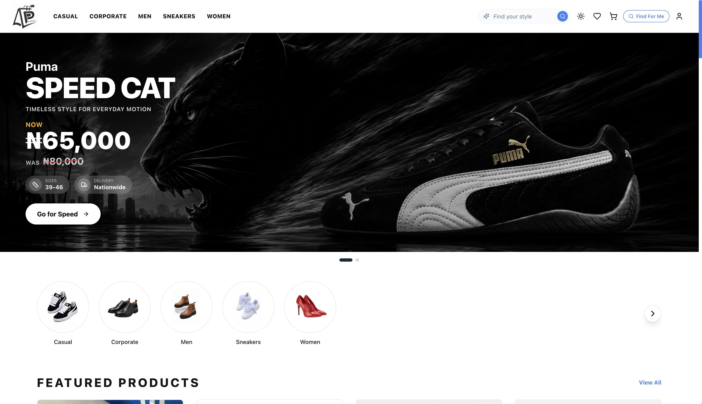

Sage X Limited
Creative Product Engineering & ADs
Software that stays up
Since 2024
Sage X Limited is a creative software engineering and marketing studio. We take products from a rough idea to something people open every day, web platforms, mobile apps, and the services behind them. We work in small teams, ship in short cycles, and stay on after launch. we also offer ads and marketing services. we run ads that convert.
© Concrete Study — texture by Sage X
Pages — commerce platform
A storefront and back office in one Next.js app — catalogue, cart, checkout, and order fulfilment, with inventory that stays honest under concurrent buys. Server-rendered product pages, a typed data layer, and payments that reconcile against the ledger, not the webhook.
Next.js · TypeScript · Postgres · Stripe

Shipping since 2024
We build for the long run
Clarity
The plan should be readable by whoever is paying for it. Scope, cost, and risk in plain sentences before anyone opens an editor.
Craft
Migrations, logs, and error states get the same attention as the landing page. The parts nobody sees are the parts that wake you up.
Continuity
We stay on after launch. We maintain for 3 months after buidling.
What we do
Full-stack end to end solutions, taken on as a full build or picked up mid-flight.
Web platforms
Web Apps: We build Store fronts, dashboards, Modern and user friendly User Interfaces.
Mobile apps
React Native and Expo: one codebase to both stores, with offline and retry states that hold.
Backend & infra
APIs, databases, deploys, and the monitoring that tells you before your users do.
Creative & ads
HTML5 display sets built to spec and weight budget, sized across every placement in the buy.
Contact
Tell us what you're building and where it's stuck. We reply within a working day.
sagex.limited@gmail.com© 2026 Sage X Limited. Software engineering studio